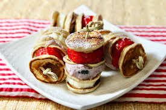

creamy chocolate mini-pancake

stick mini-pancake with strawberries
Another nice sweet delicious recipe. It is a mini-pancake on a stick with strawberries on top a belgium chocolate.
With this recipe you can not get enough of it. Beware of diabetes though;) just kidding
We will show you all the Ingredients and steps to create this recipe.
Ingredients
- 1 cup all-purpose flour
- 2 tablespoons white sugar
- 2 teaspoons baking powder
- ¼ teaspoon baking soda
- ¼ teaspoon ground cinnamon
- ¼ teaspoon salt
- ¾ cup milk
- 1 large egg
- 1 tablespoon melted unsalted butter
- 1 teaspoon amaretto extract
Steps
- 1 pint strawberries, sliced horizontally
- 1/4 cup blueberry cream cheese spread (such as Philadelphia®)
- 1 medium banana, sliced
- 1 tablespoon confectioners' sugar, or to taste
- 10 bamboo skewers, or as needed